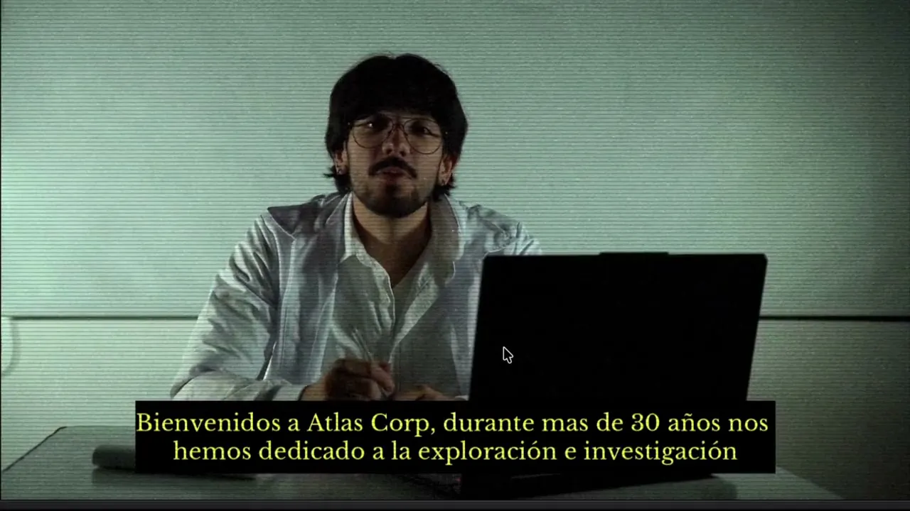
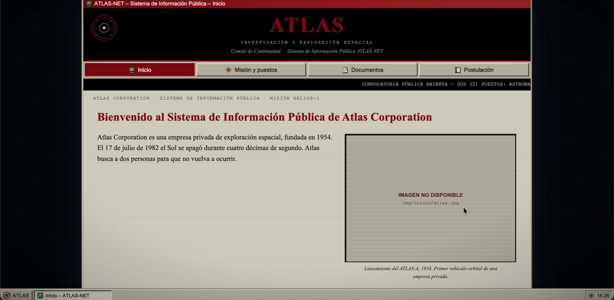
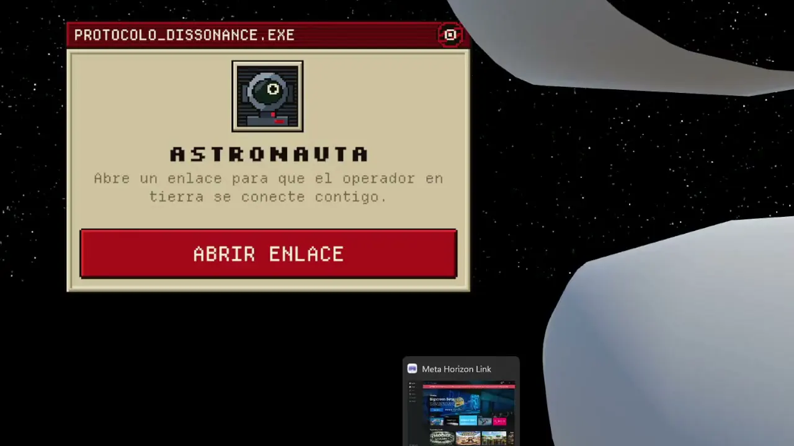

Acto I
DECIDIR
Video interactivo
Una comunicación corporativa de Atlas Corporation presenta una misión. El video plantea puntos de decisión que convierten al espectador en participante.
Ver detalle del acto I: Decidir
Narrativa interactiva e inmersiva · Terror cósmico
Una experiencia inmersiva de terror cósmico donde la curiosidad se convierte en incertidumbre y la realidad deja de ser confiable.
El proyecto
El participante cree estar entrando en un proceso de reclutamiento para una misión aeroespacial. A medida que toma decisiones, investiga archivos y colabora durante la misión, aparecen contradicciones y anomalías que debilitan su confianza en la organización, en la información recibida y en su propia percepción.
Las experiencias
Acto I
Video interactivo
Una comunicación corporativa de Atlas Corporation presenta una misión. El video plantea puntos de decisión que convierten al espectador en participante.
Ver detalle del acto I: Decidir
Acto II
Exploración web
El participante investiga por su cuenta la historia de la organización, El Apagón, la misión y sus archivos. Cuanto más lee, más difícil es que todo encaje.
Ver detalle del acto II: Buscar
Acto III
VR cooperativa + estación de control en PC
Dos participantes con roles complementarios, astronauta y operador terrestre, ven y saben cosas distintas. Deben cooperar sin poder asumir que comparten la misma realidad.
Ver detalle del acto III: Sobrevivir
DISSONANCE no se limita a representar el miedo desde afuera: diseña las condiciones para que el participante experimente la incertidumbre desde adentro.
Proceso
Lo que aprendimos de las personas guía cada decisión de la experiencia.
39
respuestas de encuesta
11
entrevistas
1
ronda de pruebas realizada
Reconocimientos
DEX (Digital Entertainment Experience) es la Muestra de Ingeniería en Diseño de Entretenimiento Digital UPB, donde DISSONANCE recibió cuatro distinciones.
El equipo